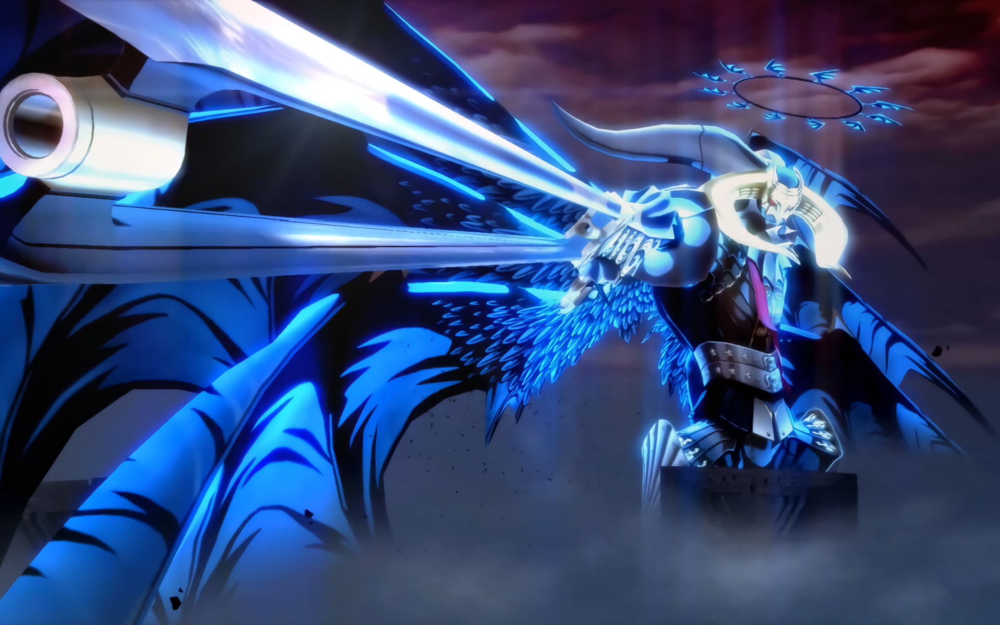
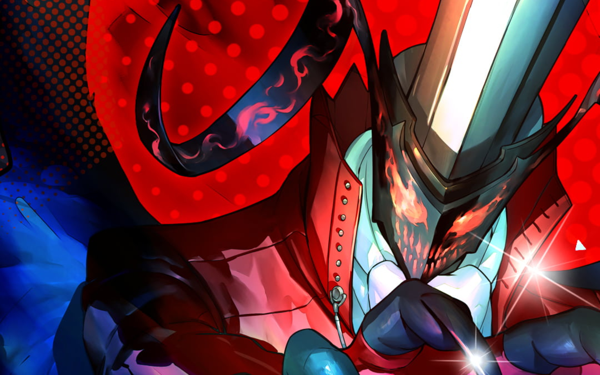

Persona adalah manifestasi kepribadian pengguna dalam seri Persona. Mereka merupakan "topeng" yang digunakan untuk menghadapi kesulitan. Persona serupa dengan Shadow, yang merupakan manifestasi jahat pemikiran dalam diri seseorang.
Ada berbagai macam Persona yang bisa didapatkan dalam permainan Persona 5 Royal. Mereka memiliki kemampuan dan kekuatan yang berbeda-beda.
Dibawah ini terdapat beberapa Persona yang bisa membantu pemain untuk menyelesaikan permainan:
- Satanael
 - Arsene
